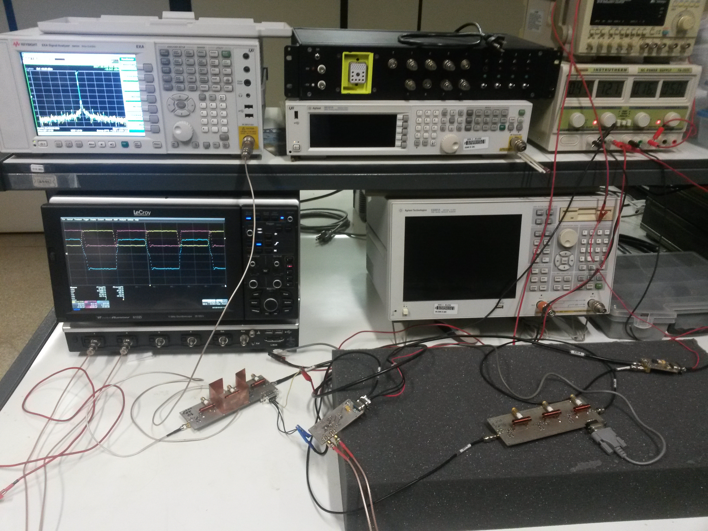
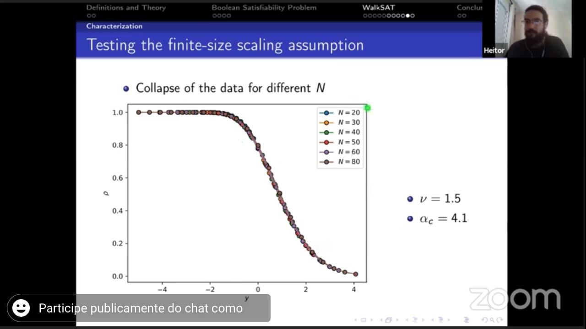

Over the last years, I studied, traveled, worked hard, and I finally got the title of Master of Science in Physics!
It was not easy. I started in the field of radio-frequency electronics for
Nuclear Magnetic Resonance Spectroscopy. The goal was to build a local
oscillator module from which to synchronize the entire machine: FPGA’s clock,
AD/DA clocks, mixers reference, and all other clock sources. Ideally, this
would reduce the overall phase noise of the machine. I had some preliminary
results that were pretty awesome  I used a 10 MHz OCXO to make any
frequency up to a few GHz. This was low power (about ~10 dBm), but enough to
add noises to many labs in the building. I spent months trying to find a
passive filter topology that could get rid of signals 10 MHz away from a center
frequency, with an isolation of at least 100 dB. The result was better than I
expected: we even considered using it as the external reference for the lab’s
oscilloscopes, spectrum analyzer, and network analyzer.
I used a 10 MHz OCXO to make any
frequency up to a few GHz. This was low power (about ~10 dBm), but enough to
add noises to many labs in the building. I spent months trying to find a
passive filter topology that could get rid of signals 10 MHz away from a center
frequency, with an isolation of at least 100 dB. The result was better than I
expected: we even considered using it as the external reference for the lab’s
oscilloscopes, spectrum analyzer, and network analyzer.

I then spent six awesome months at CERN, working with the OpenData team! This was totally unexpected, and mind-blowing. CERN is huge. Way bigger than I thought. And everything in there happens at extreme scales. My task was to mine “some” datasets and discover how they were generated. For each dataset, I had to query some systems, read some files, and write down what were the parameters used to create that dataset. The only detail that made all that out of the ordinary is the scale: we are talking about several hundreds of terabytes of data. As of now, there are about 2500 terabytes (2.5 petabytes) available for public use, and more to come. This is not something you can parse quickly, and definitely something you need to be extra careful when reading/analyzing/downloading.

Then I came back to Brazil, to continue my studies. I still needed to take some courses to have all the credits needed to finish my Master. About half a year later I started working as a Python developer at a local company.
And I needed to write my Thesis! For reasons, I started out fresh. New research topic, new supervisor, new tools, new plans. Full time job and full time research.
To complicate even more everything: we had the Covid-19 pandemic. And it hit hard. At work, the company needed to adapt, restructure, and we went full remote. At the University, the classes were interrupted, laboratories closed, and eventually the classes restarted online and labs reopened with many restrictions. My research topic did not require any presence at the University: I could study and develop my simulations at home, and run them remotely at the University’s computers. But still, I felt the impact of the restrictions.
I managed to adapt, evolve, and handle life-work-studies in a way that in 2021
I started a new job, as a Senior Python Engineer, and defended my Master’s
Thesis: Search strategies and phase transition in the Random Boolean
satisfiability problem! In which I used some tools from Statistical
Physics to analyze an
NP-Complete problem.

Now, looking back, I see those years as an epic journey: I visited two continents, I met and interacted with people from all over the world, I learned a lot about so many things in diverse topics, I had hands-on experience in diverse areas. It was a period of immense professional and personal growth.
But I did not do it all alone. I had great people by my side, supporting me, encouraging me, proud of me. My family always invested in my education, since my childhood, and supported me in every way they could. My girlfriend, my friends, and colleagues, were always there with their friendship, company, last-minute ideas for barbecues and burghers.
And last but not least, my supervisor. He was always available to answer all my questions, and he was very good at explaining everything I asked. Sometimes his answer was not what I wanted, but a way for me to think and analyze the situation and answer the question myself. His enthusiasm, patience, and charisma were essential to make this work happen.
Thank you.